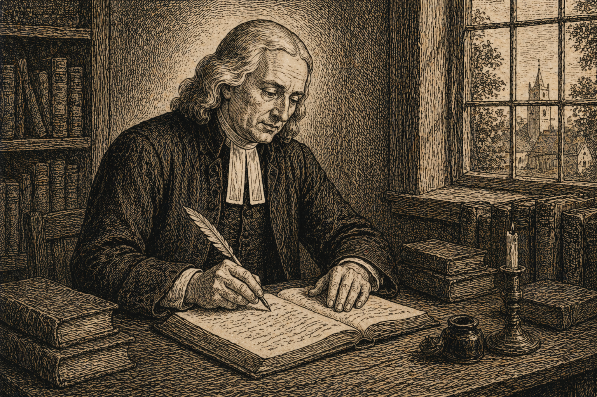

Проповідь 30 - Нагірна Проповідь Господа Нашого: Десяте повчання
Переклад проповіді "Upon Our Lord's Sermon On The Mount: Discourse Ten".
Проповідь 30 - Нагірна Проповідь Господа Нашого: Десяте повчання

2 червня 1742
Проповіді Джона Веслі – Проповідь 30
Нагірна Проповідь Господа Нашого: Десяте повчання
«Не судіть, щоб і вас не судили; бо яким судом судити будете, таким же осудять і вас, і якою мірою будете міряти, такою відміряють вам. І чого в оці брата свого ти заскалку бачиш, колоди ж у власному оці не чуєш? Або як ти скажеш до брата свого: Давай вийму я заскалку з ока твого, коли он колода у власному оці? Лицеміре, вийми перше колоду із власного ока, а потім побачиш, як вийняти заскалку з ока брата твого. Не давайте святого псам, і не розсипайте перел своїх перед свиньми, щоб вони не потоптали їх ногами своїми, і, обернувшись, щоб не розшматували й вас…Просіть і буде вам дано, шукайте і знайдете, стукайте і відчинять вам; бо кожен, хто просить одержує, хто шукає знаходить, а хто стукає відчинять йому. Чи ж то серед вас є людина, що подасть своєму синові каменя, коли хліба проситиме він? Або коли риби проситиме, то подасть йому гадину? Тож як ви, бувши злі, потрапите добрі дари своїм дітям давати, скільки ж більше Отець ваш Небесний подасть добра тим, хто проситиме в Нього! Тож усе, чого тільки бажаєте, щоб чинили вам люди, те саме чиніть їм і ви. Бо в цьому Закон і Пророки» (Матвія 7:1–12).
-
Наш блаженний Господь, завершивши основну частину Своєї проповіді, спочатку виклавши суть істинної релігії, обережно остерігаючи від людських тлумачень, які можуть знецінити Боже Слово, а згодом визначивши принципи правильного наміру в усіх зовнішніх діях, тепер переходить до вказівки на головні перепони для цієї релігії та завершує все відповідним застосуванням.
-
У п’ятому розділі наш великий Учитель повністю описав внутрішню релігію в її різноманітних проявах. Він подав нам ті душевні стани, що складають справжнє християнство; ті настрої, що містяться в тій «святості, без якої ніхто не побачить Господа»; ті почуття, які, коли походять із належного джерела — живої віри в Бога через Ісуса Христа, є по суті своїй добрі та приємні для Бога. У шостому розділі Він показав, як і всі наші вчинки, навіть ті, що самі по собі є байдужими за своєю природою, можуть бути освячені та прийнятні Богові через чистий і святий намір. Те, що чиниться без цього наміру, за Його словами, не має жодної цінності перед Богом. Натомість ті зовнішні діла, що так присвячуються Богові, в Його очах мають велику ціну.
-
У першій частині цього розділу Він вказує на найпоширеніші та найфатальніші перепони до цієї святості. У другій — закликає різними аргументами долати ці перешкоди і здобувати ту нагороду високого покликання.
-
Першою перепоною, щодо якої Він нас застерігає, є осудження. «Не судіть, щоб і вас не судили.» Не судіть інших, щоб Господь не судив вас, щоб не накликати на себе гнів. «Бо яким судом судити будете, таким же осудять і вас, і якою мірою будете міряти, такою відміряють вам» — проста й справедлива постанова, за якою Бог дозволяє вам самим визначити, як Він чинитиме з вами у День Великого Суду.
-
Немає такої сфери життя чи моменту в часі — від години нашого першого покаяння і віри в Євангелію до того моменту, коли ми станемо досконалими в любові, де б це застереження не було потрібне кожній Божій дитині. Бо нагоди до засудження ніколи не бракує. А спокус до цього є безліч; і багато з них так майстерно замасковані, що ми впадаємо в гріх, навіть не усвідомивши небезпеки. І невимовне лихо походить від цього завжди для того, хто судить іншого, ранячи власну душу й піддаючи себе праведному Божому судові; і часто для тих, кого судять, руки їхні опускаються, вони слабшають і сповільнюються в дорозі, якщо не зовсім звертають із неї й не повертаються до погибелі. Так, скільки разів, коли цей «корінь гіркоти виростає», «багато хто осквернюється ним», через що сама дорога істини стає зневаженою, а славне ім’я, яким ми називаємось, зневаженим.
-
Однак не видно, щоб наш Господь призначав цю пересторогу лише для Божих дітей; радше вона звернена до дітей світу, до людей, які не знають Бога. Вони не можуть не чути про тих, хто не є від світу, хто йде за релігією, описаною вище, хто прагне бути смиренним, серйозним, лагідним, милосердним і чистим серцем; хто щиро бажає таких мір цих святих настроїв, яких ще не досяг, і чекає їх, чинячи всяке добро всім людям та терпеливо зносячи зло. Хто дійшов бодай до цього, той не може залишатися непоміченим, так само як не може бути прихованим «місто, що стоїть на горі». І чому ж ті, хто «бачить» їхні «добрі діла», не прославляють «Отця, Який на небесах»? Яке вони мають виправдання, щоб не йти їхніми слідами, щоб не наслідувати їхнього прикладу і не бути їхніми послідовниками, як вони є послідовниками Христа? Ось яке: щоб приготувати собі виправдання, вони засуджують тих, кого мали б наслідувати. Вони витрачають час на пошуки вад у ближнього, замість того щоб виправляти власні. Вони так зайняті тим, що інші збиваються з дороги, що самі ніколи на неї не стають; або, принаймні, не просуваються далі бідної, мертвої форми побожності без сили.
-
Саме до них, особливо до таких, звернені слова Господа: «І чого в оці брата свого ти заскалку бачиш», тобто на немочі, помилки, нерозважливість, слабкості дітей Божих, «колоди ж у власному оці не чуєш?» Ви не помічаєте згубного непокаяння, сатанинської пихи, проклятого самовілля, ідолопоклонської любові до світу, що панує у вас самиз, речей, які роблять усе ваше життя мерзотою перед Господом. Найбільше ж, з якою байдужістю й легковажністю ви танцюєте над самою безоднею пекла! І «як же», з яким правом, якою скромністю чи гідністю «Давай вийму я заскалку з ока твого», тобто надмірну ревність до Бога, надмірне самозречення, занадто сильну відстороненість від мирських турбот і справ, бажання перебувати вдень і вночі в молитві або слуханні слів вічного життя, «коли он колода у власному оці?» Не заскалка, як у нього. «Лицеміре» — ви, що удаєте турботу про інших, не дбаючи про власну душу; ви, що показово ревнуєте про Божу справу, а насправді ані не любите, ані не боїтеся Його! «Вийми перше колоду із власного ока» — вийми колоду непокаяння! Пізнай себе! Побач і відчуй себе грішником! Усвідом, що твоє нутро сповнене беззаконня, що ти цілковито зіпсутий і огидний, і що гнів Божий перебуває на тобі! Вийми колоду пихи; зненавидь себе; принизься в порох і попіл; будь усе меншим, нищим, нижчим і нікчемнішим у власних очах! Вийми колоду самовілля! Навчися розуміти слова: «Хто хоче йти за Мною, нехай зречеться себе самого». Відречіться від себе, візьміть свій хрест щодня. Хай вся ваша душа взиває: «Я зійшов з неба», бо так і є, безсмертна душе, хоч знаєте ви це чи ні, «не щоб чинити свою волю, а волю Того, Хто послав Мене.» Вийміть колоду любові до світу! Не любіть світу, ані того, що в світі. Будьте розп’яті для світу, а світ — для вас. Користуйтеся світом, але знаходьте радість у Бозі. Шукайте усю свою повноту в Ньому! А понад усе, вийміть головну колоду, цю байдужість і легковажність! Глибоко усвідомте: «одне потрібно» — те єдине, про що ви ледве коли замислювалися. Пізнайте і відчуйте, що ви жалюгідні, нікчемні, винні черв’яки, що тремтять над великою прірвою! Хто ви такі? Грішники, народжені на смерть; листки, що женуться вітром; пара, що з’являється та щезає, невидимі привиди у повітрі. Побачте це! «А потім побачиш, як вийняти заскалку з ока брата твого». І тоді, якщо залишиться в тебе час після дбання про власну душу, ти знатимеш, як виправити й брата свого.
-
Але що саме означає це слово: «Не судіть»? Що це за судження, яке тут забороняється? Це не те саме, що й зле говорити про когось, хоча часто ці речі йдуть поруч. Зле говорити — це розповідати щось погане про особу, яка зараз відсутня; тоді як засудження може стосуватися як відсутнього, так і присутнього. Воно також не обов’язково передбачає вимовлене слово, йдеться лише про зле думання про когось. Але й не кожна зла думка про іншого є тим засудженням, яке засуджує наш Господь. Якщо я бачу, як хтось чинить крадіжку чи вбивство, або чую, як він зневажає Боже Ім’я, я не можу не думати про нього зле. Але це не грішне засудження: у цьому немає гріха, нічого суперечливого до лагідної любові.
-
Зле засудження — це таке мислення про іншу людину, що суперечить любові; і це може виявлятись у різний спосіб. По-перше, ми можемо вважати людину винною, коли вона насправді не винна. Ми можемо приписувати їй (принаймні в думці) те, чого вона не вчинила; слова, яких вона не казала, або дії, яких не робила. Або ми можемо думати, що її вчинки були неправильними, хоча в дійсності це не так. І навіть коли не можна докорити ні самій справі, ні способу її виконання, ми можемо підозрювати недобрий намір, і на тій основі її засудити, тоді як Той, хто випробовує серця, бачить її щирість і богоугодне прагнення.
-
Але ми можемо впасти у гріх засудження не лише тоді, коли засуджуємо невинного; але і, по-друге, коли засуджуємо винного суворіше, ніж він на те заслуговує. Такий вид судження — це також порушення не тільки милості, а й справедливості; і єдиний надійний захист від нього — це найсильніше й найніжніше почуття любові. Без нього ми легко припускаємо, що той, хто дійсно провинився, винен у більшому, ніж насправді. Ми знецінюємо будь-яке добро, яке є в ньому. Навіть більше, нам важко повірити, що в ньому взагалі могло залишитися щось добре, якщо ми вже знайшли в ньому щось зле.
-
Усе це свідчить про явну відсутність тієї любові, яка οὐ λογίζεται κακόν — «не думає зла», яка ніколи не робить несправедливих чи немилосердних висновків з будь-яких обставин. Любов не припускає, що людина, одного разу впавши у відкритий гріх, робить це постійно; і навіть якщо колись вона й справді жила в гріху, любов не робить висновку, що це триває досі, — тим більше, що якщо вона зараз винна в одному гріху, то обов’язково винна й в інших. Усі ці лукаві висновки є частиною того гріховного засудження, від якого Господь тут нас остерігає; і яке ми з найбільшою серйозністю повинні уникати, якщо любимо Бога або власну душу.
-
Але навіть якщо ми не засуджуємо ні невинного, ні винного понад міру, то усе ж можемо не бути вільними від цієї пастки. Бо існує, по-третє, ще один вид гріховного судження — це засудження будь-якої особи без достатніх доказів. І хоч факти, які ми припускаємо, можуть бути правдивими, то це нас не виправдовує. Бо вони мали би бути не припущені, а доведені; і доки не доведені, доти ми не мали би виносити жодного засудження. Я кажу: доки не доведені, бо й тоді ми не виправдані, якщо навіть факти мають дуже вагомі підтвердження, але ці докази не були представлені до винесення вироку, і не були зіставлені з доказами з іншого боку. Ми не можемо вважати себе виправданими, якщо винесли остаточне рішення до того, як обвинувачений мав змогу висловитися сам. Навіть юдеї могли би нас навчити цього як простого уроку справедливості, ще до милосердя та братньої любові. «Хіба судить Закон наш людину, як перше її не вислухає, і не дізнається, що вона робить?» — сказав Никодим (Івана 7:51). Та й язичник міг відповісти, коли начальники юдейського народу просили засудити в’язня: «Не має звичаю римлянин судити людину, поки обвинувачений не побачить облич своїх обвинувачів і не матиме дозволу відповісти щодо провини, яку йому ставлять».
-
Насправді, ми би рідко впадали в гріховне засудження, якби лише дотримувалися того правила, про яке один [Сенека] із тих язичницьких римлян сказав, що сам ним керувався: «Я настільки далекий від того, щоб легковажно вірити свідченню будь-кого проти іншої особи, що навіть не охоче вірю людині, яка говорить проти себе самої. Я завжди дозволяю їй друге осмислення, і часто навіть пораду». Тож ідіть і ви, хто називаєте себе християнами, і робіть так само, щоб язичник не встав і не засудив вас у той день!
-
А як рідко нам слід засуджувати або судити один одного; принаймні, як швидко було б усунуте це зло, якби ми трималися того ясного й виразного правила, якого Сам наш Господь навчив нас. «Коли ж згрішить проти тебе брат твій», або якщо ви почуєте чи повірите, що він так учинив, «піди й докори йому між тобою та ним самим». Це перший крок, який ви маєте зробити. «А коли він не послухає, візьми з собою ще одного або двох, щоб устами двох чи трьох свідків утвердилося кожне слово». Це другий крок. «А коли він знехтує послухати їх, скажи Церкві», або її наглядачам, або всій громаді. Тоді ви зробили свою частину. Далі не зосереджуйтеся на цьому, а віддайте все Богові.
-
Але якщо ви, завдяки Божій благодаті, «вийняли колоду з ока свого» й тепер «ясно бачите заскалку чи колоду, що в оці брата вашого», то все ж будьте обережні, щоб не завдати шкоди самим собі, намагаючись допомогти йому. Все ще «не давайте святого псам». Не поспішай вважати когось із них, але якщо це явно і безсумнівно підтверджено, тоді «не розсипайте перел своїх перед свиньми». Стережіться ревності, що не за розумом. Бо це ще одна велика перепона на шляху тих, хто прагне бути «досконалими, як Отець їхній Небесний досконалий». Ті, що цього бажають, не можуть не бажати, щоб усе людство стало учасником тієї самої благодаті. І коли ми самі вперше стаємо учасниками небесного дару, божественного «доказу речей невидимих», ми дивуємося, чому все людство не бачить того, що нам видно так ясно; і ми не маємо жодного сумніву, що відкриємо очі всім, із ким матимемо бодай якусь розмову. Тому ми намагаємось негайно навертати всіх, кого зустрічаємо, і змусити їх побачити — хочуть вони того чи ні. І через невдачі, які приносить така безрозсудна ревність, ми часто шкодимо власній душі. Щоб не марнувати сили даремно, наш Господь додає це необхідне застереження (необхідне для всіх, але особливо для тих, що горять у першій любові): «Не давайте святого псам, і не розсипайте перел своїх перед свиньми, щоб вони не потоптали їх ногами своїми, і, обернувшись, щоб не розшматували й вас».
-
«Не давайте святого псам». Стережіться називати когось так, доки не матимете повного й незаперечного доказу, такого, якому вже неможливо противитися. Але коли ясно й безсумнівно доведено, що це люди нечестиві та злі, не лише чужі Богові, але й вороги Богові, усякій праведності та істинній святості, тоді «не давайте святого», to agion, «святого», так виразно названого, таким людям. Святі, особливі вчення Євангелія, ті, що були «сховані від віків і поколінь» давнини і тепер відкриті нам лише через об’явлення Ісуса Христа та натхнення Його Святого Духа, не слід віддавати на поталу тим, хто навіть не знає, чи є Дух Святий. Не тому, що посланці Христа можуть утриматися від проголошення цих істин у великому зібранні, де, ймовірно, є й такі люди. Ми мусимо говорити, чи слухатимуть, чи відмовляться слухати. Але з приватними християнами справа інша. Вони не мають цього грізного звання, і на них немає обов’язку нав’язувати ці великі й славні істини тим, хто їм противиться й зневажає, хто має вкорінену ворожнечу проти них. Ба більше, їм не слід так робити; радше треба вести таких людей настільки, наскільки вони здатні понести. Тому не починайте з ними розмову про відпущення гріхів і дар Святого Духа; говоріть з ними їхнім способом і на їхніх засадах. З розсудливим, поважним і неправедним епікурейцем міркуйте про «праведність, стриманість і майбутній суд». Це найімовірніший шлях змусити Фелікса тремтіти. А вищі теми залишай для тих, хто досягнув вищих щаблів.
-
«Не розсипайте перел своїх перед свиньми». Будьте дуже обережні, щоб не поспішати називати когось цим іменем. Але якщо факт є явний і незаперечний, якщо все зрозуміло понад будь-який сумнів, якщо ці свині навіть не намагаються замаскувати себе, а навпаки хваляться своєю ганьбою, не роблячи жодної спроби до чистоти ані серця, ані життя, а чинять усіляку нечистоту з пожадливістю, тоді «не розсипайте їм своїх перел». Не говоріть із ними про таємниці Царства Божого, про речі, яких око не бачило, вухо не чуло; які, через те, що не мають іншого джерела пізнання, не можуть і ввійти в їхнє серце. Не розповідайте їм про «вельми великі та цінні обітниці», які Бог дарував нам у Сині Своєї любові. Яке поняття можуть мати вони про те, що означає стати учасниками Божої природи, якщо вони навіть не прагнуть визволитись від зіпсуття, яке є в світі через пожадливість? Скільки перлин цінують свині — стільки ж вони цінують Божі глибини. Скільки смаку вони мають до перлів, стільки ж вони мають до євангельських таємниць, коли їхні серця поринули в грязюку цього світу, у його насолоди, бажання й турботи. О, не розсипайте перед них цих перлів, «щоб вони не потоптали їх ногами своїми», щоб вони не зневажили те, чого не можуть зрозуміти, і не почали злословити речі, яких не знають. Ба більше: ймовірно, що це не буде єдиною неприємністю, яка вас спіткає. Не буде дивним, якщо вони, за своєю природою, «і, обернувшись, щоб не розшматували й вас», якщо за ваше добро відповідатимуть злом, за благословення — прокляттям, за добру волю — ненавистю. Така ворожнеча тілесного розуму проти Бога й усього Божого. Такий прийом ви маєте чекати від них, якщо запропонуєте їм цю «непростиму образу» — намагання спасти їхні душі від смерті, вирвати їх, як головні з вогню.
-
І все ж, не слід впадати у відчай навіть щодо таких, що «обернувшись, розшматували вас». Бо якщо всі ваші аргументи й переконання не діють, то все ще залишається один засіб, і той, що часто виявляється ефективним, коли не спрацьовує ніщо інше: це — молитва. Тому, чого би ви не бажали чи не потребували, чи то для інших, чи для своєї душі, «просіть і буде вам дано, шукайте і знайдете, стукайте і відчинять вам». Нехтування цим — це третя велика перепона на шляху до святості. Ми досі «не маємо, бо не просимо». О, якими би ви могли бути лагідними й тихими, якими сповненими любові, як до Бога, так і до людей уже сьогодні, якби ви тільки просили! Якби ви були наполегливими в молитві! Тому, принаймні тепер, «просіть, і буде вам дано». Просіть, щоб ви могли повністю пережити й досконало практикувати всю ту релігію, яку наш Господь тут так гарно описав. Тоді вам буде даровано бути святими, як Він є святий, як у серці, так і в усьому способі життя. Шукайте на тому шляху, що Він заповів: досліджуючи Писання, слухаючи Його Слово, роздумуючи над ним, у пості, у Причасті та, безперечно, знайдете. Ви знайдете ту дорогу перлину, ту віру, що перемагає світ; той мир, якого світ не може дати; ту любов, що є завдатком вашої спадщини. Стукайте; перебувайте в молитві та на усіх інших Божих дорогах. Не ослаблюйтесь і не зневірюйтесь. Прямуйте до мети. Не приймайте відмови. Не відпускайте Його, поки не благословить вас. І двері милості, святості, неба відчиняться вам.
-
Із співчуття до закам’янілості наших сердець, таких непіддатливих до віри в Божу доброту, наш Господь благоволить ширше розкрити цю тему, повторюючи й підкріплюючи Свої слова. «Бо кожен, хто просить одержує»; тож ніхто не має підстав втратити благословіння; «і хто шукає знаходить», навіть кожен, хто шукає — знаходить любов і образ Божий; « а хто стукає відчинять йому». Тож тут немає місця для зневіри, ніби хтось може даремно просити, шукати чи стукати. Лише завжди пам’ятай молитися, шукати, стукати та не занепадати духом. І тоді обітниця буде непохитною. Вона тверда, як стовпи небесні, навіть твердіша; бо небо й земля минуться, а Слово Його не мине.
-
Щоб остаточно відкинути всі приводи до невірства, наш блаженний Господь у наступних віршах ще глибше ілюструє Своє вчення, звертаючись до нашого власного серця. «Чи ж то серед вас є людина, що подасть своєму синові каменя, коли хліба проситиме він?» Хіба навіть природна любов дозволить вам відмовити в розумному проханні того, кого ви любите? «Або коли риби проситиме, то подасть йому гадину?» Хіба ви дасте йому шкідливе замість корисного? Отже, навіть із того, що ви самі відчуваєте й робите, ви можете отримати найповніше запевнення: з одного боку, що жодна шкода не може статися від вашого прохання, а з іншого, що прохання неодмінно приведе до доброго результату, до повного задоволення ваших потреб. Бо «Тож як ви, бувши злі, потрапите добрі дари своїм дітям давати, скільки ж більше Отець ваш Небесний», Той, Хто є сама доброта, чиста й незмішана,«подасть добра тим, хто проситиме в Нього» або, як Він каже в іншому місці, «дасть Духа Святого тим, хто просить у Нього!» А в Ньому міститься все добро, уся мудрість, мир, радість, любов; усі скарби святості й щастя; усе, що Бог приготував тим, хто Його любить.
-
Але щоб ваша молитва мала повну силу перед Богом, переконайтесь, що ви перебуваєте в любові до всіх людей; бо інакше вона, радше, принесе прокляття, ніж благословення на вашу голову. Ви не можете очікувати жодного Божого дару, поки не маєте любові до ближнього. Тому, усуньте цю перепону без зволікання. Утвердіть вашу любов один до одного й до всіх людей. І любіть не лише словами, а ділом і правдою. «Тож усе, чого тільки бажаєте, щоб чинили вам люди, те саме чиніть їм і ви. Бо в цьому Закон і Пророки».
-
Це є царський закон, це золоте правило милості, так само як і справедливості, яке навіть язичницький імператор наказав написати над брамою свого палацу; правило, яке, як вважають багато хто, природно вписане в серце кожної людини, що приходить у світ. І це принаймні беззаперечно: щойно це правило почуто, воно схвалюється совістю й розумом кожного; настільки, що жодна людина не може навмисно його порушити, не несучи осуду в своєму серці.
-
«Бо в цьому Закон і Пророки». Все, що написане в Законі, який Бог відкрив людям з давніх-давен, і всі настанови, які Бог давав через Своїх святих Пророків «від початку світу», усе це зведено до цих кількох слів, увібрано в цю коротку настанову. І це, якщо правильно це зрозуміти, охоплює всю релігію, яку наш Господь прийшов установити на землі.
24.Це можна тлумачити або в негативному, або в позитивному сенсі. Якщо в негативному, тоді значення таке: «Усього, чого ви не хотіли би, щоб вам робили інші, не робіть їм». Це просте правило, завжди під рукою, завжди легке для застосування. В усіх справах, що стосуються ближнього, поставте себе на його місце. Уявіть, що обставини змінилися, і ви в тій самій ситуації. І тоді пильнуйте, щоб у ваших думках не було жодного пориву чи уста не промовили нічого, чого ви самі би не прийняли, опинившись на його місці. Якщо ж у прямому й позитивному сенсі, то його прямий зміст такий: «Усе, чого ви могли б розумно бажати від нього, уявляючи себе в його обставинах, те, наскільки маєте силу, робіть кожній людині».
-
Щоб застосувати це на одному або двох очевидних прикладах. Кожній людині ясно зі свого сумління: ми не хочемо, щоб інші судили нас, щоб безпідставно або легковажно думали про нас зле; тим більше ми не хочемо, щоб хтось говорив про нас зле, щоб розголошував наші справжні провини або немочі. Застосуйте це до себе. Не робіть іншому того, чого ви не хотіли б, щоб він зробив вам, і тоді ви вже ніколи не будете судити ближнього, ніколи безпідставно або легковажно думати зло про будь кого; тим більше не будете говорити зле. Ви не згадаєте навіть справжньої провини відсутньої людини, хіба що настільки, наскільки ви переконані: це абсолютно необхідно для добра інших душ.
-
Знову: ми хочемо, щоб усі люди любили й поважали нас, і поводилися з нами з огляду на справедливість, милосердя й правду. І ми маємо повне право бажати, щоб вони робили для нас усе добро, яке можуть зробити, не шкодячи собі; так, щоб у зовнішніх речах (відповідно до відомого правила) їхні надлишки поступалися нашим зручностям, їхні зручності — нашим потребам, а їхні потреби — нашим крайнім скрутам. Тож і ми маємо чинити так само: Чинимо іншим так, як би хотіли, щоб вони чинили з нами. Любімо й поважаймо всіх людей. Нехай справедливість, милість і правда керують нашими думками й діями. Нехай те, що маємо понад потребу, поступиться зручностям ближнього; тоді хто з нас матиме бодай якісь надлишки? Нехай наші зручності поступляться потребам ближнього, а наші потреби поступляться його крайній нужді.
-
Оце і є чиста й справжня моральність. «Чини це — і житимеш». «На всіх, хто живе за цим правилом, нехай буде мир і милість» — бо це й є «Ізраїль Божий». Та слід зауважити: ніхто не може жити за цим правилом (і ніколи не жив від початку світу), ніхто не може любити свого ближнього, як себе самого, якщо спершу не полюбить Бога. А ніхто не може любити Бога, якщо не вірує в Христа; якщо не матиме відкуплення через Його кров і свідчення Духа Божого, що свідчить разом із його духом, що він — дитина Божа. Віра, отже, залишається коренем усього, як теперішнього, так і вічного спасіння. Все ще маємо говорити кожному грішникові: «Увіруй у Господа Ісуса Христа — і спасешся». Спасетеся тепер, щоб бути спасенними навіки; спасетеся на землі, щоб бути спасенними на небі. Увіруйте у Нього — і віра ваша чинитиме любов’ю. Ви полюбите Господа Бога вашого, бо Він полюбив вас; ви полюбите ближнього свого, як самих себе; і це буде вашою славою та радістю — проявляти та примножувати цю любов не просто утриманням від усього, що їй суперечить (від кожної нелюб’язної думки, слова чи вчинку), але й через виявлення всієї тієї доброти до кожної людини, яку хотіли би отримати від неї самі.